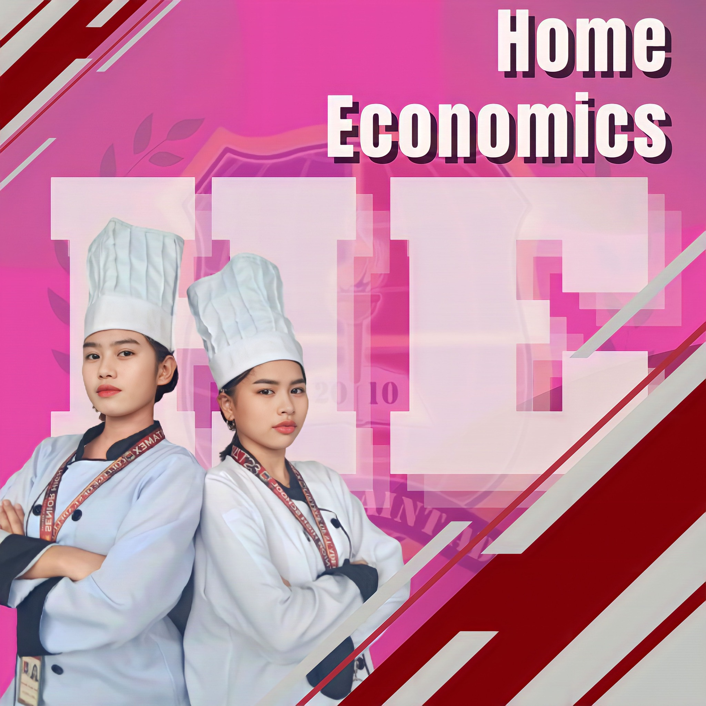
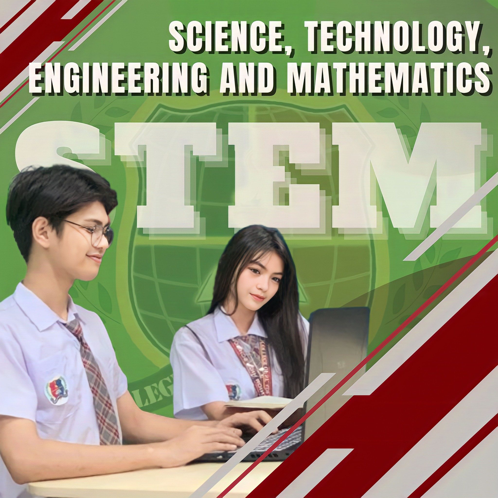

Programs
College
BSIT (Bachelor of Science in Information Technology) Definition:- Software Developer
- IT Support Specialist
- Systems Analyst
- Network Administrator
.jpg)
A four-year degree program that focuses on the study of computing technology and its applications in various fields. It covers areas like programming, networking, database management, web development, and software engineering. Graduates are equipped with technical skills to manage IT systems and develop innovative tech solutions.
Common Careers:- Administrative Assistant
- Office Manager
- Executive Secretary
- Records Clerk
.jpg)
A four-year degree program designed to prepare students for administrative and clerical roles in businesses, schools, and government offices. The program covers office management, computer applications, records management, and professional communication.
Common Careers:- Tourism Officer
- Travel Agency Manager
- Tour Guide
- Cruise Line Staff
.jpg)
A four-year degree program tailored for students interested in the travel and tourism sector. It emphasizes tourism planning, marketing, management, and sustainable development. Students learn about cultural heritage, tour operations, and destination management.
Common Careers:- Hotel Manager
- Restaurant Supervisor
- Events Coordinator
- Travel Consultant.
.jpg)
A four-year degree program focused on the hospitality and tourism industry. It trains students in areas such as hotel and restaurant operations, event planning, travel management, and customer service. The program emphasizes hands-on learning and internships in real-world settings.
Common Careers:SHS
HUMSS (Humanities and Social Sciences) Definition:- Teacher
- Journalist
- Social Worker
.jpg)
This academic strand is for students interested in fields like literature, history, philosophy, and the social sciences. It develops critical thinking, communication, and analytical skills, preparing students for careers in education, law, media, and social work.
Career Pathways: Lawyer-

- Chef
- Entrepreneur
- Fashion Designer
- Hotel Staff
Part of the Technical-Vocational-Livelihood (TVL) track, this strand focuses on practical skills in areas like cooking, baking, sewing, and hospitality services. It is ideal for students who want to pursue entrepreneurial or vocational careers in the culinary, fashion, or hospitality industries.
Career Pathways:-

- Engineer
- Doctor
- Scientist
- Architect
Designed for students who are inclined toward science, math, and technology. This strand prepares students for courses in engineering, medicine, architecture, and other technical fields
Career Pathways:- Accountant
- Business Manager
- Entrepreneur
- Marketing Specialist

This strand focuses on the fundamentals of business, finance, and entrepreneurship. It equips students with knowledge in accounting, marketing, management, and economics, preparing them for careers in the corporate world or as entrepreneurs.
Career Pathways:- Versatile for any college course
- Teacher
- Administrative Assistant
- Architect
This strand is for students who are undecided about their specialization. It provides a broad foundation, allowing students to sample different disciplines such as humanities, sciences, and business.
Career Pathways: